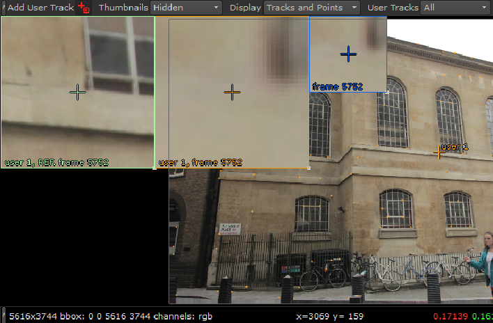
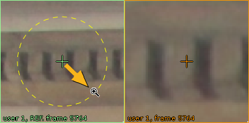

您可以根据需要添加尽可能多的用户跟踪，这取决于您打算完成什么。例如，自动跟踪辅助可能只需要一个或两个用户跟踪，而手动跟踪至少需要八个用户跟踪。
| 1。 | 启用快速添加按钮 在查看器的顶部，单击查看器以添加用户轨迹或单击 添加轨道 在 用户轨迹 属性面板中的选项卡。 |
注意: 单击 添加轨道 将新轨迹放置在当前查看器的中心。
提示: 您可以通过保持快速添加用户轨迹 Ctrl / Cmd Alt 并在查看器中单击。
轨迹缩放窗口显示在查看器的左上角。

最初有三个缩放窗口:
• 参考框架 (绿色)-轨道中的第一帧，保持不变，允许您在后续帧中更准确地定位特征。
• 当前帧 (橙色)-播放头位置。使用此窗口可以通过将当前帧与参考帧进行比较来调整跟踪锚点。
• 关键帧 (蓝色)-序列中的第一个关键帧。添加更多关键帧会为每个关键帧添加缩放窗口。
提示: 您可以单击关键帧缩放窗口，立即跳转到该帧。
提示: 您可以通过设置隐藏缩放窗口 缩放窗口 查看器控件 关闭 .
| 2. | 将定位点中心的十字准线拖到要跟踪的特征上，或手动调整轨迹 x 和 y UserTracks 列表中的字段。 |
| 3. | 通过在当前帧缩放窗口中单击并拖动来细化轨迹位置。 |
提示:
您可以通过按住来更改缩放窗口的放大倍数
转变
并将放大镜光标从窗口中心拖动。

要调整缩放窗口的大小，请将其右下角拖到新位置。
| 4. | 一旦你对赛道的位置感到满意，继续 用户跟踪方法 . |
|
|